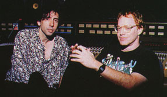

Movieline Magazine - November 1993 by Stephen Rebello
Typed in by Barbara Germany.
Note: You can order this back-issue. To order, send $5.00 (US currency) payable to Movieline to: Movieline, 1141 S. Beverly Drive, Los Angeles, CA 90035. California/Los Angeles residents should add appropriate sales tax, and outside the USA should have $10 additional (ouch!) for p&h. It takes about 8-10 weeks to get it.
[teaser - from the mag's table of contents]
As Hollywood's hottest film composer readies his most personal project, the upcoming animated musical Tim Burton's The Nightmare Before Christmas, he lets fly on everything from the rumors that he doesn't compose his own scores to what's wrong with cramming pop tunes into movies.

Film music composer Danny Elfman is describing a nightmare. "There's this slow moving freight train barreling toward me," he says."Physically, emotionally, psychologically, there's this panicky sense of 'Uh-oh, get the shovel, dig, dig, dig that tunnel and lay those tracks to make sure the train stays on course.' Then it's 'Whew, we got through that little mountain, but, uh-oh, what's that up ahead?"
The engine hurtling headlong toward Danny Elfman is Tim Burton's The Nightmare Before Christmas, the upcoming Disney animated feature containing 10 original Elfman songs. On the face of it, it sounds more like a lark than a nightmare. After all, it's a holiday romp - in it, the king of Halloween wreaks havoc by trying to bring Christmas to Halloween Town. And it features stop-motion animation of the sort most of us fell in love with as little kids in such movies as The Voyage of Sinbad and The Beast from 20,000 Fathoms married to cutting-edge technology of the sort lots of us fell in love with as taller kids in Who Framed Roger Rabbit. On the other hand, it's a project that's been talked about for a decade, and it turned out to be so complicated it required a special studio set up in San Francisco to house over 100 specially trained animators, artists and technicians. Then too, it's a movie that excites high expectations. Not only does it mark the latest of Elfman's collaborations with Tim Burton- to date, these include Pee-Wee's Big Adventure, Beetlejuice, Edward Scissorhands and the two Batman epics - but it also comes on the heels of three of Disney's all-time most successful animated movies, The Little Mermaid, Beauty and the Beast and Aladdin. From what I've seen and heard of this Nightmare, it's bracingly oddball and wild, complete with such typical Elfman-Burtonesque touches as a villain who breaks into a Cab Calloway-style routine while making mincemeat out of Kris Kringle, a ghost dog names Zero, singing fluorescent skulls, and coffin-shaped sleighs.
Just now, I'm visiting Elfman in the crackly atmosphere of a control booth inside a Warner Brothers recording sound stage. While director Burton gangles about nervously twirling his shades, Elfman tries to wrest from the 50-odd musicians just the right note of piercing melancholy for "The Reprise." It's a lilting romantic duet that Catherine O'Hara and Elfman himself sing for the movies hero and heroine. Yet no matter how artfully Elfman cajoles, flatters or gently explains his desires to the weary-looking musicians, no matter how specific he gets with his "mezzo pianos" and "fortissimos," he falls short of drawing out what he's after.
"There's a very funny note that shouldn't be there in Bar 17," he observes softly to the orchestra and his conductor. He adds, "Are the French horns playing legato? And I have to say that the performance was not, ummm, the best we've had." They try again. The piece sounds, variously, mournfully beautiful, funereal, then inconsequential. Take after take fails to please the perfectionistic Elfman. Burton flops down into a sofa, where he gets surrounded by various people on his staff. "Look, is there a possibility of air conditioning in this room?" Elfman snaps, smiling acidly. "What is this, the Warner Bros. sweat shop?"
The orchestra takes a break. Elfman bounces around the room trying to lighten up, then he bops over to Burton to remind him, half-jokingly, "We have a member of the press with us tonight." This prompts them to stage for me a mock mutual strangulation. Asks Elfman, "Tim, when was the last time I decked ya?" to which Burton shoots back, "When was our last meeting?"
Back at work, Elfman probably doesn't see what I see: a player in the front row shooting one of his colleagues a look that seems to say, "Oh, man, it's only movie music." The thing is, of course, Elfman doesn't just make movie music. His unapologetically pushy, evocative, moody scores for such movies as Sommersby and Midnight Run are stuff I find myself humming. His compositions for Burton's movies are stuff that seem to navigate the Burton mindscape the way Nino Rota's do Federico Fellini's and Bernard Herrmann's do Alfred Hitchcock's. "It's been a really artistically fruitful relationship," Elfman says. "We've always had pretty smooth sailing in terms of musically working together." When I canvas Burton on the same subject, he observes, "Danny kind of stumbled into film music a little like I stumbled into film. He grew up liking movies. I grew up liking movies. Film music had an impact on both of us. That's all the expertise we had going into this. We're trying to bumble our way through it, without a lot of preconceived ideas. He totally understands the tone I like, which is usually an even mix of funny, tragic, overly dramatic, all at the same time. He understands that it doesn't matter if it's a comedy, a horror movie, whatever. He understands the complexities of things. In my case, he helps us to understand what the hell the movie's all about."
Suddenly, Elfman and the orchestra finally get in sync. The groove they hit is so eerily, unexpectedly right that Elfman begins singing "The Reprise" in the control room in that spookily fluid, nervous tenor recognizable to any fan of Oingo Boingo, the L.A. cult band Elfman fronts. The place chills out. Even the battle weary sound tech sways to the swooning strings and a lovesick accordion. Burton, watching Elfman surreptitiously, actually allows a grin to animate his face. Only a spoilsport would call it a less that perfect take.
Now everyone's breathing easier, but not for nothing has this project provoked nightmares of onrushing trains in the 40-year-old musician: It's suddenly discovered that the music sheets from which the orchestra is playing are in a completely different key from the vocals laid down by Elfman and Catherine O'Hara. Hushed huddles ensue among Elfman, Burton, the conductor and various recording technicians, What to do? Try to find out whether O'Hara's schedule would allow her to fly to re-record her lines? Hire a "voice double"? Should Elfman, as he suggests, only half-kiddingly, sing both his and O'Hara's roles? Despite the pressure, nobody freaks, nobody points fingers. But it's been a long night in a series of long nights for such a potentially costly foul-up.
"I fucked up," Elfman says about the incident when we meet a few weeks later for a conversation in his rustic Topanga Canyon home. "It was a shock. A year ago, when we originally recorded the reprise duet between the hero and the heroine, the song was meant to be done in two different keys. But because the movie has since been reedited, somehow or another I grabbed the wrong key. Only that night on the sound stage did I realize, 'Oh, my God, I really screwed this up.' Nobody shit over the whole thing, though, because at least it wasn't one of the songs on which we have forty voices, that took three days to record. In the end, Catherine came in and re-sang her four lines with me. It only took 15 minutes. So, it wasn't total panic, just one of those 'uh-ohs.'"
Speaking of "uh-ohs," did Disney, known industry-wide for intrusive attitudes toward moviemakers and their projects, express any attitude about such a sweetly off-beat production? Elfman's score, like the screenplay and style of animation, is so rich in unexpected mood shifts, clever lyrics and musical genre-bending, it seems far simpler, yet more sophisticated, than Disney's recent animated smashes. How did the studio bosses take to a score that's quintessentially Elfman, yet also features nods to Rodgers and Hammerstein, Kurt Weill, Cole Porter, Tom Waits, even Barnum & Bailey? "I told Disney up front, 'You're not going to get a pop ballad out of this.'" he asserts in a tone that says one shouldn't doubt him for a second. What, no big potentially salable duet for Peabo Bryson and Celine Dion? Or Linda Ronstadt and Aaron Neville? Shaking his head, Elfman answers. "I can't work as a composer for hire anymore. I have a pretty clear idea of what kind of music I do and don't want to write and, at this point, I'd rather die than try to force a contemporary ballad on a timeless or old-fashioned musical. By the same token, Nightmare could never work by trying to squeeze it into that Beauty and the Beast framework - you know, a six-song, contemporary Broadway-ish Disney musical. That would be like trying to graft the head of a tiger onto the body of a gorilla.
"You understand, I'm not saying what I do is better, it's just more to my taste," Elfman remarks. "Disney, to their credit, gave Tim a lot of autonomy to create this strange little project and so I was excited to do a musical that was not Broadway-based or Broadway-inspired but very much like an old-fashioned musical from the 30's, 40's or 50's. Now that I'm done with most of it , I realize how much work those old musicals were. But the way the music constantly weaves in and out to tell the story means that this movie could have been done in any earlier period."
And Disney is letting it ride, quirks and all? "They never pressured," Elfman assures, "never tried to turn it into a hybrid of a contemporary formula. They just let it be another animal altogether, even when nobody actually knows how it will work or how people will take it. It's not Beauty and the Beast or The Little Mermaid, but it's at an imaginative level that might spawn some kid to open the door to their imaginations. In fact, Disney's showing this real hunger, what with their partnership with Merchant-Ivory and taking on Tim [Burton's] project Ed Wood [about the cult movie director] to get into the dark little areas they've never had any contact with before."
This jibes with something Burton told me, too, when he said, "One reason I like this project so much is that it's very clear and was designed a long time ago. It meant Disney was never in the position where we went, 'Here's our idea,' and they were, like, 'Fine, but what are you going to do with it?' It was very laid-out, with the characters and story very much as they are. It's a very different thing from the kind of animated movies they've done. I hope it has a positive effect on them."
By all accounts, though, the road leading to Tim Burton's Nightmare, which the eponymous producer describes as "How the Grinch Stole Christmas", only in reverse," was packed with twists and mazes. On live-action movies, for instance, Elfman begins work when the director has his footage in the rough-cut stage. That's when he begins working up themes and musical cues, which he refines further and further as the movie gels into its final form. At that point, he record the score. Nightmare was completely different. The raw material Elfman and Burton began working from was a decade-old plan.
"[Burton] had a story, an outline," the musician explains, "but the first attempts with another writer to put a script together were evaporative and didn't work at all. We kept missing deadlines. I told him, 'Look, let me just start writing songs that tell the story.' and he agreed. It became a clean, pure process of my beginning writing from the first song and working chronologically. I'd call Tim every three or four days, he'd come and we'd talk about where the story went next, he'd leave and I'd already be hearing the beginning of the next song in my head. I started demoing them all up, signing them, until eventually, we were really excited to be telling the whole story and fleshing out the characters in music. Then, Caroline Thompson came in and kind of wrote the script around it. And, suddenly, the Disney animators up north in San Francisco, who were putting together their new studio, started animating the songs first because they had real concrete stuff to work with."
It's truly Elfman's baby: he not only collaborated on the story line and script, composed the lyrics and the music, he also "sings" the movie's lead character (complementing Chris Sarandon, who "speaks" the role) and is also one of the trio of comic Santa kidnapers called "Lock, Shock, and Barrel." Elfman, to whom some collaborators past and present attribute a very well-developed ego, says he is unconcerned that peers may take potshots at his ambitiousness. He says, laughing, with a shrug, "Listen, I've got demos of me doing all the vocals, with the exception of 'Sally's Song,' because it's the only one I couldn't sing. Tim doesn't have kids, but, from the beginning of this project, my then six-and-a-half-year-old, now nine-year-old daughter Mali and my 14-year-old Lola have put their stamp of approval on every song." That Elfman's homegrown brand of "test marketing" might prove insufficient for the studio bosses at Disney is, director Burton will admit under prodding, a nightmare of its own. The characters, unlike most of Disney's animated stars, are angular and ragtag, not smoothed-out and immediately lovable. "The problem is you never quite know what someone else's perception of something's going to be," declares Burton, who, at the beginning of his career, worked as a Disney animator and created the now-legendary six-minute, German expressionism-influenced animated homage to Vincent Price, Vincent, and the 29-minute live-action Frankenweenie, which the studio outright refused to release. "All I hope is that we don't run into the thinking that, because these characters look weird, that they're going to be perceived as scary. There's nothing really negative in it. There isn't even a villain, per se. It isn't like bad characters taking over Christmas. Jack Skellington does what he does because he like the feeling of Christmas and thinks he can do a good job. Disney's been great. So far. But I keep waiting for something to happen."
Whether Disney lets Elfman and Burton go their merrily macabre way or not, it's obvious that Elfman happily stands apart from most of his movie-music composer peers. He assesses the state of modern movie scores as "definitely shifting for the worse." How so? "There are several major studios where musical scores have become irrelevant because all they want is a hit song," he observes. Declining to get specific he continues, "One studio likes to jam hit songs into period pieces. You know, rock music in a movie taking place in a completely different time! And directors don't seem to give a fuck.
"There are exceptions," Elfman allows. "When I heard what [Elmer Bernstein] did with Bernard Herrmann's old score for Cafe Fear, where the stereo gave the music such impact and power, I felt like I was about to be blown out of my seat. It was just heaven. A couple of times over the past eight years since I've been doing movie scores, I've thought of pulling out. I've gotten so disheartened by the direction things seem to be going, but Cape Fear actually encouraged me.
"With everybody today, it's sell a couple of million albums and make a lot of money. I understand that a movie studio is in business to make money and that they want to get a video on MTV to market their movie. On the other hand, the blatantness with which[pop] pieces get jammed into movies is horrendous. It's hysterical hearing a song that couldn't possibly fit in any less well, yet you have these studio people saying, 'Ah, how beautifully this song fits in here!'"
But hold on. Hasn't Elfman himself succumbed to the hit song seduction. After all, fellow Oingo Boingo fans may cherish Elfman and company's frenetic vocals and playing on stuff like "Dead Man's Party" and "Only a Lad," but it took "Weird Science," for the 1985 John Hughes flick of the same name, to put this cult band on the charts. "That was a teen film," Elfman points out, sounding prickly. "If you've got a contemporary film with contemporary characters and can find something that fits, I'll always try. On Batman Returns, I saw the potential to put in a song of Siouxsie & the Banshees that fit, but it didn't stand out from the tone of the movie. Nothing could have convinced me to attempt to find a place for a song on Sommersby."
Even in an age when so much is oversold, on and off the screen, Elfman's music recalls the great sweep and passion of older, often better movies. So, what does he make of the old Hollywood saw that says if you notice the music in a movie, the composer is grandstanding? "absolute bullshit," He answers like a shot. "That's just an excuse to be lazy. As a kid watching movies, I suddenly became award that music was elevating the picture, doing something else to the movie. In every classic film I've ever seen, the music stood out as a character to make a bold statement. But Dolby sound was the death of the classic film score, the single worst thing that ever happened to film music, because it marked the end of film music being a major character and the beginning of sound effects being a major character."
Despite his status as one of the most frequently recorded of all contemporary movie composers (he already boasts a very persuasive compilation disc, Music for a Darkened Theater, that includes everything from his theme from "The Simpsons" to a nifty bit from the otherwise forgettable Hot to Trot), Elfman has been cut little slack by critics. "I'm used to getting flack from critics," Elfman says, shrugging. He laughs when I mention the rampant confusion over whether he or Prince wrote the Batman music, or whether Madonna, Stephen Sondheim or he wrote Dick Tracy. Then there are the rumors that someone else actually writes his music. Or that he hums his music themes into a tape recorder for others to flesh out. "you have to remember that I didn't become a composer until eight years ago and that I'm totally self-taught and instinctive," he explains. "I have so many friends who are directors, writers, cinematographers and editors, but the single most snobbish and elitist group of all in movies are film composers. They're the only ones that will punish you for your lack of schooling and who won't accept you because you're self-taught. They just insist that you don't exist. And, although I taught myself to write notation on paper, I'll always be perceived by some as a 'hummer' - someone who hums the melodies and turns them over to teams of orchestras who do my work. I go to Italy a lot and recently I was there at a party and this young composer came up to me and asked me about these same rumors. Even over there, he'd heard that I just hum my music or that I don't even write it. It's amazing, but, once something like that starts, there's no reason to worry about it because there's nothing you can do about it."
Nevertheless, interesting directors clamor to work with Elfman. What was it like writing (and rewriting) the score for Dick Tracy? "Warren [Beatty] was insane," He observes. "But, see, what overshadows all the craziness involved in working with Warren is that I wanted to write a big, romantic Gershwinesque melody and that's what I got to write." Doing Midnight Run for Martin Brest? "He's a total, unbelievable pain in the ass," he declares, "but, at the end of the day, after so much fuss, hassling and a torturous ordeal, he allowed me to write a score that I have no regrets about." Yet, although Sommersby for Jon Amiel was "really fun," he's fondest of such things as Sam Raimi's Darkman and Clive Barker's Nightbreed, "because melodramatic stuff lets me tap into 'movie classical' forms, you know, Wagner and Mahler by way of Korngold, Bernard Herrmann, Miklos Rozsa and Max Steiner."
What's next for Elfman? Although he enthuses over the fact that he will again be working with Burton on Ed Wood, he says he plans next to write a "lush, romantic score" for Black Beauty for debuting director - and offscreen, his longtime companion - Caroline Thompson. He's even more animated when he rattles off several projects he is developing on his own. If all goes as planned, Burton will next year produce and Elfman direct his own pet project screenplay, Julian, a ghost story. He enthuses, too, over two musicals: The World of Jimmy Callicut, which he calls "Pinocchio meets Lord of the Flies, that's my perspective on growing up, not Spielberg's," and Little Demons, a Disney project set in '20s Europe being written by the pair who penned Burton's Ed Wood, and which he says is "wonderfully sick and devilish as can be gotten away with." Will new challenges bring satisfaction to Elfman's restless spirit? He nods his head in the affirmative, then drawls, in pure Elfmanese, "Maybe, but no doubt I'll find a whole new level of critical nonacceptance."